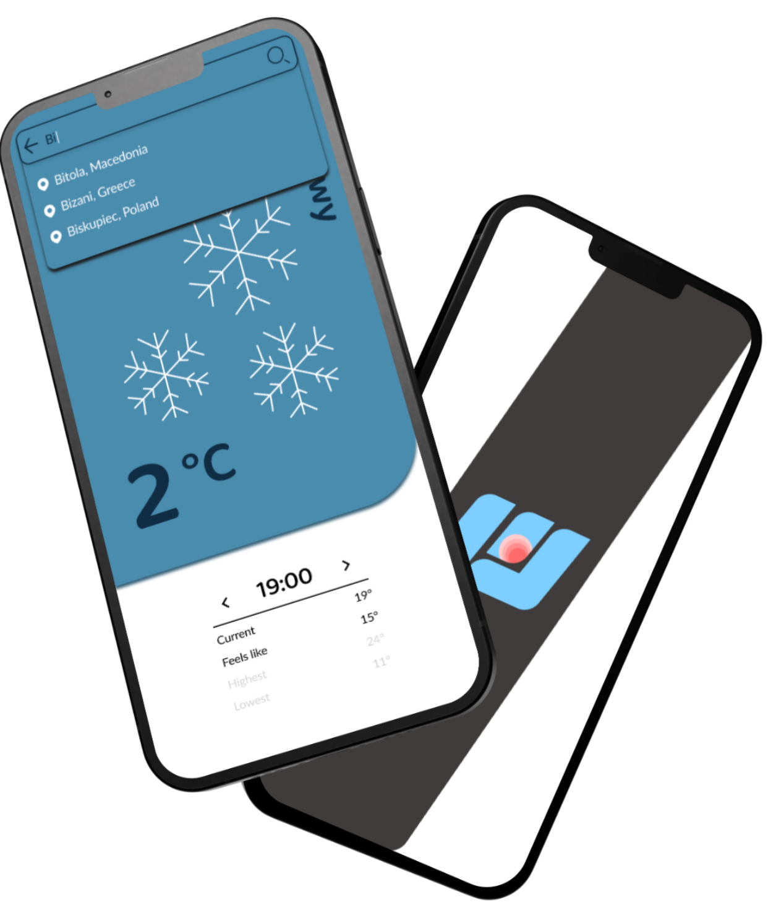

Pocket Weather
mobile design
ux/ui research
illustrations
Overview
Pocket Weather is as the name suggests - weather app, and it’s the second project that we did as a group at the academy. It’s a simple to use mobile app that shows you the weather and all weather warnings that comes with it.
 Click to view moreThe Process
Weather affects everything—what we wear, how we travel, what we plan. But most weather apps feel cold, cluttered, or purely technical. Pocket Weather brings a fresh perspective. It’s calm, reliable, and beautifully human. It’s weather for your life—delivered with clarity, warmth, and the accuracy you can trust.
Whether you're chasing sunshine or bracing for a storm, Pocket Weather helps you make every day a little more predictable.
What You Get:
- Real-Time Weather Data: Get accurate, up-to-the-minute weather updates based on your exact location, including temperature, precipitation, wind, UV index, and more.
- Hourly & 7–10 Day Forecasts: Stay ahead of the day or plan your week with reliable forecasts broken down in a clean, easy-to-read layout.
- Smart Weather Alerts: Be notified of severe weather, sudden temperature drops, or rain before you head out—so you’re never caught off guard.
- Lifestyle-Focused Insights: Daily suggestions like "Light jacket needed", "Perfect for a morning run", or "High pollen count—take your allergy meds" help turn data into action.
- Interactive Radar & Maps: Track storm systems, rainfall, wind patterns, and temperature changes in real time with intuitive, zoomable maps.
- Beautiful, Minimal Design: Our clean interface uses soft colors, elegant animations, and calming visuals to make checking the weather a calming, quick ritual.
- Custom Locations: Track weather in multiple cities—perfect for travelers, remote workers, or those checking in on loved ones.